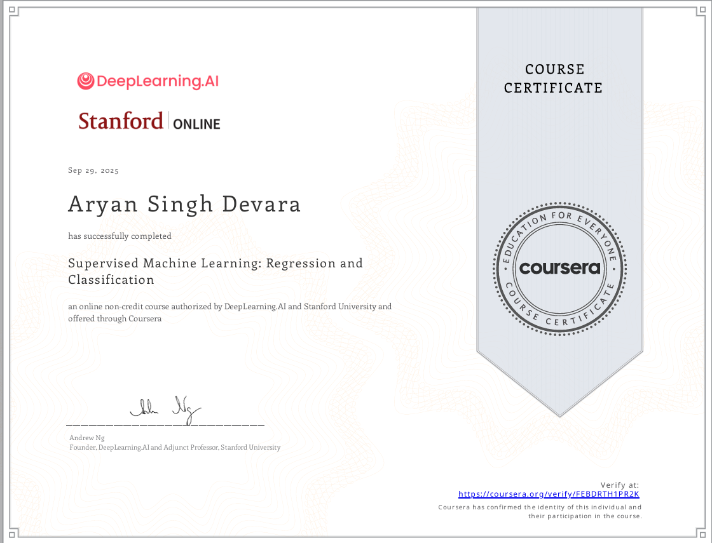

Intro

I’m a self-driven learner with a deep curiosity for exploring new technologies and domains. Currently, I work as a Software Specialist at PTC , where I’ve been recognized with three awards over the past three years. Before that, I was a Software Engineer at MiniOrange , a bootstrap startup focused on security solutions.
My learning journey includes completing CS50’s Web Programming with Python and JavaScript, Stanford Online’s Supervised Machine Learning course, and earning an NPTEL certification in Advanced Graph Theory. I’ve also had the opportunity to serve as a training instructor for Accio’s learning program, sharing knowledge and mentoring others.
Beyond tech, I love traveling to new places, immersing myself in different cultures, and nurturing my curiosity for diverse experiences and perspectives.
Key expertise:
JAVA
Angular
GitLab
Python
Supervised Learning
Sckit-Learn
TensorFlow
CI-CD
PostgreSQL
CI-CD
Docker
AZURE
SALT
Hobbies:
Photo Editing
Guitar
Video Editing
Badminton
Swimming
Project
Sorting Algo Visualizer
Skill Required: JavaScript
HTML
CSS
Algorithm

Developed an interactive website to visually demonstrate various sorting algorithms.
Turtle Race Master
Skill Required: Python
Object-Oriented Programming
Fuzzy Logic
Algorithm

Developed a turtle race simulator from scratch that utilizes fuzzy logic inputs to determine the winner based on maximum membership functions, while also displaying the corresponding crisp output. This project demonstrated the practical applications of fuzzy systems in real-world scenarios. The main challenge was to implement the entire logic without using Python’s built-in fuzzy module.
Output
Would you like to play again Yes
write the input fuzzy value for the turtle 1
write the input fuzzy value for the turtle 2
write the input fuzzy value for the turtle 5
write the input fuzzy value for the turtle 3
write the input fuzzy value for the turtle 8
write the input fuzzy value for the turtle 1
write the input fuzzy value for the turtle 2
write the input fuzzy value for the turtle 6
The actual crisp value for the given fuzzy set:
4.448
The winner is:
pink
GitHub Link --->>>
Sudoku Solving Algorithm
Skill Required: Python
Algorithm
Data Structure

In this project, I developed two different algorithms to solve Sudoku puzzles — one based on the Backtracking approach, and another that solves the puzzle without using backtracking.
GitHub Link --->>>
Voice Assistant
Skill Required: Python
Operating System
Audio Processing

This project involved developing a voice-interactive system that assists users in performing tasks. Unlike standard virtual assistants, this enhanced version provides direct access to the operating system, offering greater functionality and control.
GitHub Link --->>>
Face Mask
Skill Required: Python
Computer Vision
Video Processing

In this project, I explored computer vision to create facial landmarks, enabling a variety of interesting applications. We utilized shape_predictor_68_face_landmarks.dat, trained on the iBUG dataset with over 5,000 images, which ensures high accuracy and fast performance.
GitHub Link --->>>
Drowsy Detection
Skill Required: Python
Computer Vision
Video Processing
Algorithm


In this project, we took a step beyond face mask detection and developed a drowsiness detection system. By leveraging facial landmarks around the eyes, we calculated the eye aspect ratio, which allows the system to determine whether a person is sleepy.
GitHub Link --->>>
Event Site
Skill Required: Python
Django
Bootstrap
Object-Relational Mapping

In this project, I developed an event website using Bootstrap for the front-end and hosted it on a local Django server.
Fire alarm mechanism
Skill Required: PCB Design
Op-Amp Operation
In this project, we learned how to work with an operational amplifier (op-amp), and using a thermistor, we developed a fire alarm system capable of detecting heat.
Street light timing mechanism
Skill Required: 8051 Programming
Algorithm
In this project, we explored 8051 microcontroller programming to develop a timing mechanism that can be applied to automate street lights.
Workshop
SuperVised Machine Leaning

It was a 3-week Stanford Online training program focused on Supervised Learning, covering topics such as linear and polynomial regression, gradient descent, cost function analysis, and vectorization techniques. The training provided a strong foundation in understanding how models learn from data and optimize performance through iterative improvement.
Additionally, the course explored classification techniques, including logistic regression, decision boundaries, and the corresponding cost functions and gradient descent methods. It also addressed common challenges such as overfitting.
Quadrator

It was a two-day hands-on workshop that began with understanding the physics behind flight, including concepts like thrust, drag, lift, payload, and the different motion dynamics — roll, yaw, and pitch.
On the second day, we built a functional quadcopter using the KK2.1.5 flight microcontroller, configured a PID control system, and successfully tested it in flight.
Bluetooth, voice control car
It was a two-day workshop that started with an introduction to Arduino fundamentals and its working principles.
On the second day, we programmed the Arduino, assembled the circuits, and used the Arduino Bluetooth Control module to build a Bluetooth and voice-controlled car.
PTC R&D
Software Specialist
Key Skill:
Azure Container
Gitlab Runner
CI-CD
Java
Python
ANT
Groovy
Jenkins
Azure VMs
TerraForm
Salt
As a Software Specialist at PTC R&D , I have played a key role in building scalable enterprise solutions across two core teams — Migration (Azure Cloud) and Redline. Within the Migration team, I spearheaded the architecture and implementation of the CCD (Code Configuration and Deployment) framework, an integral Windchill component designed to configure, compile, and deploy customer code, data, and artifacts across distributed systems. I also contributed to the development of WC-SCCM (Windchill Source Code Cloud Management), a GitLab-based infrastructure tool that facilitates version control of customer customizations and efficient retrieval of customer data. I independently designed and implemented a CI/CD pipeline for WC-SCCM using the GitLab Runner, enabling automated execution of test cases on Azure VMs to ensure the reliability and functionality of the system. I was also involved in building a self-service portal for Windchill Plus to help improve the user experience. The development of the platform, utilizing Angular
As part of the Redline team, I worked as a Full-Stack Developer on Windchill Redline (GWT), where I introduced a branching strategy for the PLM ecosystem—similar to GitHub’s workflow but aligned with Change Notices and Change Requests. One of the main technical challenges involved addressing suspect scenarios during merge and synchronization processes across PLM branches. These complexities stemmed from dependencies among multiple parameters such as Manufacturer Part, Vendor Part, Classification Properties, Part Usages, Attributes, Occurrences, and Substitutes, often requiring manual intervention due to the intricate coupling of components.
Through these roles, I have honed my skills in cloud migration, automation pipeline development, and full-stack engineering, with an emphasis on designing robust architectures and streamlining enterprise workflows for large-scale systems.
MiniOrange
Software Engineer
Key Skill: Security Protocols
SAML
OAuth
PHP
Drupal
Web API
During my tenure at the Bootstrap startup MiniOrange, I had the opportunity to work on a range of login and authentication security protocols as a Software Enginner.
My key contributions involved enhancing and integrating Drupal SAML IDP and expanding mapping functionalities within the Drupal OAuth Client. I also explored and implemented REST API authentication mechanisms while collaborating directly with clients to address technical requirements and ensure smooth integration.
This experience not only strengthened my understanding of secure authentication systems but also refined my technical problem-solving and client communication skills.
Analytics Domain
Intern
Key Skill: Django
NLP
PostgreSQL
MongoDB
Nginx
ORMs

During my internship in the analytics domain, I honed my skills in self-directed learning, Machine Learming, web development and problem-solving through a variety of projects. I developed a Django-based full-stack assessment portal that evaluates essays using a machine learning model aligned with IELTS band criteria. The system tokenizes essay inputs and predicts corresponding band scores, with its functionality also exposed via an API for standalone usage.